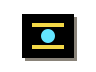
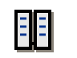
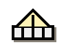
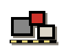
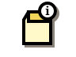
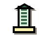
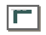
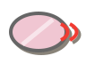
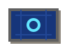

assets/icons/extra-black-box.svgDrop your own SVG or PNG into assets/icons/, then change the matching src in index.html or projects.html. These are transparent image assets, so the project catalog and service sections no longer depend on CSS-only icons.

assets/icons/extra-black-box.svg
assets/icons/extra-datacenter.svgassets/icons/extra-governance-orb.svg
assets/icons/extra-public-works.svgassets/icons/extra-weird-object.svgassets/icons/map-central-commons.svg
assets/icons/map-facility-grid.svgassets/icons/map-help-desk.svg
assets/icons/map-info-booth.svg
assets/icons/map-investor-hall.svgassets/icons/map-labs.svgassets/icons/map-plaza.svgassets/icons/map-press-room.svgassets/icons/map-project-block.svg
assets/icons/project-api-gateway.svgassets/icons/project-illogica-factory.svgassets/icons/project-kowabungataug.svgassets/icons/project-ordvault.svg
assets/icons/project-scoping-voices.svg
assets/icons/project-videobeaux.svgassets/icons/project-viewfinder.svgassets/icons/project-webglo.svgassets/icons/service-prototyping.svgassets/icons/service-software-development.svgassets/icons/service-solution-architecting.svgassets/icons/service-system-auditing.svg